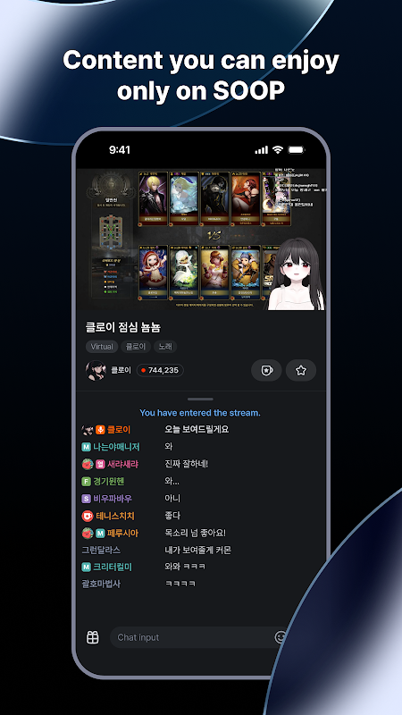

用了半年 Afreeca TV 才发现这五个隐藏功能，直播体验直接翻番
以为 Afreeca TV 就是看韩国直播？其实时光机回看、Catch 短视频切片、QuickView 免广告、多画面同开这些进阶入口藏得极深，翻底朝天挖出来分享。
你以为 Afreeca TV 就是装个afreeca tv下载的 App 刷韩国主播的直播画面？我一开始也这么想。连续泡了半年游戏区和生活区，翻遍设置项、试遍道具、蹲完官方帮助中心，才发现它藏了一堆afreeca tv官网几乎不主动宣传的功能——有些解决的是"看直播最头疼的那个瞬间"，有些打开后连 VOD 观看方式都变了。
这篇不讲注册流程、不讲怎么找喜欢的主播，专讲那些"翻了设置才知道、用过就回不去"的冷门道。
时光机：直播进行中就能倒回去看
看实时直播最遗憾的时刻是什么？是你去倒杯水的两分钟里，刚好上演了一波五杀、一个进球、或者主播说了句关键话。VOD 要等直播结束才有，短视频剪辑得等别人剪，等你刷到弹幕都已经刷过去半小时了。
时光机（Time Machine）就是官方专门为这个场景做的功能——直播还在进行中，你可以像按了录像机的倒带键，把画面拖回任意想看的位置。我第一次在 LCK 决赛现场试的时候，整个人都愣住了：进球的那一帧我没错过，倒回去还能看三次慢放，弹幕刷屏时倒回去找触发点也特别好用。
它的路径藏得真深：进入支持时光机的直播间（官方赛事场次普遍有，普通直播间要看主播开不开），播放器控制区里有个小图标，点了之后就能拖时间轴。普通直播间按次消耗星气球，官方赛事标注单次 50 星气球，如果订阅了 Plus 档位，很多主播把时光机列入订阅福利，订阅后免次次付费。
一个容易忽略的细节：回看期间直播并没有停下来，画面在后台继续跑。你看完之后切回实时，直接跳到最新进度——相当于你"穿越"了那段精彩片段，没跟丢任何后续。这个设计比直接暂停好太多，很多人以为时光机是暂停回放，其实它是在后台继续播的同时给你拉一条回看轨道。
Catch 短视频：从直播里"长"出来的三分钟沉浸流
Afreeca TV 做短视频了？不是，是它的 Catch（캐치）——官方解释叫"捕捉有意义的瞬间"。和抖音 YouTube Shorts 那种独立创作的短视频不一样，Catch 的每条都从某场真实直播里剪出来：主播的名场面、精彩回合、翻车瞬间，三分钟以内，竖屏 9:16。
底部导航的 Catch 入口很低调，我刷了半个月才注意到它旁边还能排 Trending 热门。点进去是全屏竖屏流，上下滑动切换，右侧直接挂着点赞、评论、礼物按钮。看到特别精彩的切片，点进作者主页能直接跳回那场完整直播。
对我来说它最大的价值不是"看短视频"，而是发现新主播：刷到一条 Catch，觉得这个主播打游戏的风格对味，顺着切片回直播间蹲完整场，比在分类页瞎翻效率高得多。
有个坑要提：QuickView Plus 免广告的范围不覆盖 Catch。afreeca tv文档里明确写着 QuickView Plus 跳过的是 VOD 视频广告，Catch 内的特定广告形态不在跳过范围——刷短视频流遇到插播广告属正常，别以为自己买了 Plus 就全程零广告。
QuickView vs QuickView Plus：进场广告和全程免广告是两回事
很多人搞不清这两个道具的区别。QuickView 是基础档，只解决进场看贴片广告的问题——点开直播直接进正片，不用先看那段 15 到 30 秒的视频广告。进阶版 QuickView Plus 在此基础上再加三项权益：VOD 免视频广告、手机多画面双路同看、移动端直播预览。
我一开始也以为 QuickView Plus 就是"更贵的免广告"，直到某天发现两个被我忽视的细节：一是 QuickView 用户进场前就能预览直播画面约 20 秒（手机端和电视端都支持），这个预览不是 QuickView Plus 才有，基础档就有；二是订阅主播的免广告和 QuickView 免广告是两套体系，订阅免的是你订阅那位主播的直播和 VOD，QuickView 免的是全场进场广告，两者可以叠加。
什么时候值得买？每天看一两场直播、不常看重播的，裸用免费版就行，几秒广告忍忍过去。每天看多场、常翻 VOD、想同时开两路直播对比的，直接上 QuickView Plus 更划算。
多画面：一场看不够，同时开两路
QuickView Plus 独有的多画面功能我用过之后再也回不去单屏了。支持手机端双路同看，比如一边看自家支持的 LCK 赛事，一边看隔壁队友的训练直播，两路画面并排，不用在两个 App 之间切来切去错过关键镜头。
它的入口藏在播放器的设置面板里，第一次找了好半天。多画面只在手机端支持，桌面端和电视端暂时没有，而且前提是你得有 QuickView Plus——免费用户和基础 QuickView 用户找不到这个开关的。
中文界面：不是默认选项，得手动切
最后一个算不上隐藏功能，但很多海外用户不知道能切。Afreeca TV 原生是韩语界面，官方给了五种语言可选，中文是其中之一，但不是安装后自动检测你的区域就能切的——得进设置里手动找。
切完之后弹幕、直播标题、道具商店这些界面元素全部中文化，连星气球的价格都跟着变成了当地货币计价（海外版按美元，韩国版按韩元）。对看不懂韩语又不想全程盯着韩语界面查翻译的人来说，这个切换基本是必做的，只是入口藏得确实有点深。
一个海外用户最容易踩的坑
写这篇的时候顺便提醒下海外用户的预期管理：直播观看、VOD、时光机这些核心功能海外都正常可用，但付费方式、活动资格、收益结算这些深层差异确实存在。官方政策的表述是活动主要面向韩国国民和居民，欧盟等海外居民不在部分活动范围内，订阅首次优惠的可用性也随活动条款变动。打算开播的海外朋友，提现链路涉及银行 swift code 和付款人信息，细节提前查主播中心的最新公告。
总之外海用户能用，但别拿国内用户的福利预期去套，付费和结算一律以道具商店和主播中心的实时说明为准。
收尾：把它用透
Afreeca TV 不是一个"装了就能用顺"的 App，它的很多好东西藏在设置深处和道具页面里，得自己翻。时光机、Catch、QuickView Plus、多画面、中文界面，这五个是我半年里扒出来觉得真有用的——你如果只是随便看看主播，可能永远碰不到这些入口；但如果每天泡在上面、想把直播体验调到最舒服的状态，花半天时间翻一遍设置，绝对能挖到自己的私藏。想看完整的功能清单和参数对照表，我整理的资料在三套仓库都能拿到：GitHub 是主副本，Gitee 国内访问更稳，GitCode 是备份镜像。
